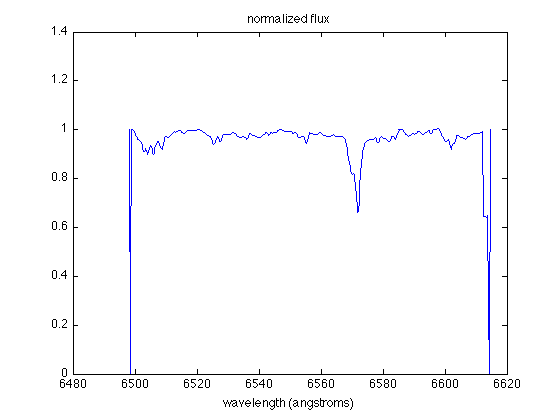
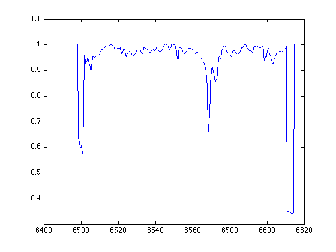

Graphical Input
Contents
Assuming that you have successfully read in data from files and figured out how to plot the specturm.
The primary feature in these plots is a doubling of the H-alpha absorption line. The H-alpha line, when at rest, has a wavelength of 656.28 nm. However, Doppler effect tells us that the wavelengths of absorption or emission lines may vary, if the object is moving relatively to the observer. Therefore, spectrum with two absorption features is a characteristic of binary systems -- their different line-of-sight velocities cause the doubling of the H-alpha line. By measuring the wavelengths of the two absorption lines can tell us the velocities of both components of this binary system.
Selecting points
To measure the wavelengths of the absorption lines from the plot, we can use a handy function provided by MATLAB, ginput. After the image is showed, try type
ginput
ans =
1.0e+03 *
6.5556 0.0009
6.5701 0.0008
6.5719 0.0007
6.5785 0.0009
and then you can select points from the figure using the mouse for cursor positioning (just click your mouse button when the cursor is on the point you want). After you select all points you want, press the Return key on your keyboard.
Note: if you feel like the feature in the plot is too tiny, you can zoom in by using the Zoom tools on the figure toolbar before you type ginput. You can't zoom in/out when you are in graphical input mode.
This returns the x- and y-coordinates of those points you have selected.
Or, just like this lab, you KNOW that you are only interested in two points. So you can type
ginput(2)
ans =
1.0e+03 *
6.5701 0.0008
6.5719 0.0007
and the function is automatically terminated after two points are selected.
Saving info
If you want to save the coordinates for future use, you can save them in the vectors x and y:
[x1, y1] = ginput
x1 =
1.0e+03 *
6.5556
6.5701
6.5719
6.5785
y1 =
0.9354
0.8126
0.6570
0.9436
The coordinate of the first point you select will be (x(1), y(1)), the second will be (x(2), y(2)), and so on.
This is useful in this lab, because you definitely want to save the x-coordinates (i.e. wavelengths) of both absorption lines in each spectrum. However, if you simply use
[x2, y2] = ginput(2)
x2 =
1.0e+03 *
6.5701
6.5719
y2 =
0.8126
0.6570
you'll find that you're screwed -- the velocity information (i.e. wavelength!) for "dip" #1 is stored in x(1), x(3), x(5), ... and the velocity info for "dip" #2 is stored in x(2), x(4), x(6), ....
How are you going to calculate the rotation period if the data are mixed up?!
Therefore, you should recall your knowledge about matrices and arrays in MATLAB, and use some command like this:
[x(1,:), y(1,:)] = ginput(2)
x =
1.0e+03 *
6.5701 6.5719
y =
0.8126 0.6570
This returns the wavelength of the absorption line caused by component #1 in x(1,1) and the wavelength for component #2 in x(1,2). You can apply the same procedure to other binary files:
load('binary2.dat')
plot(binary2(:,1), binary2(:,2))
 After the image is shown, use
[x(2,:), y(2,:)] = ginput(2)
x =
1.0e+03 *
6.5701 6.5719
6.5724 6.5687
y =
0.8126 0.6670
0.8556 0.6591
to save the wavelength info in the second row of the array x.
Note: Be careful of the order when you select the dips. You should always click on the ones corresponding to the same star first.
Question: How do we know which "dip" corresponds to star #1 or #2? (hint: consider the shape/depth of the dips!)
Finally, you will have a 7x2 array x; each column describes the motion of one component of the binary system at different time, and each row describes the motion of the two components in the system at a specific time.